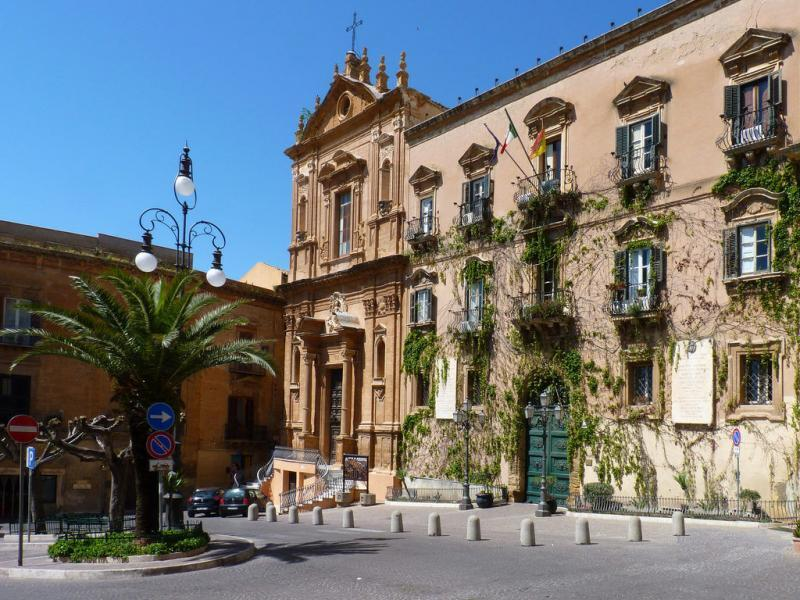
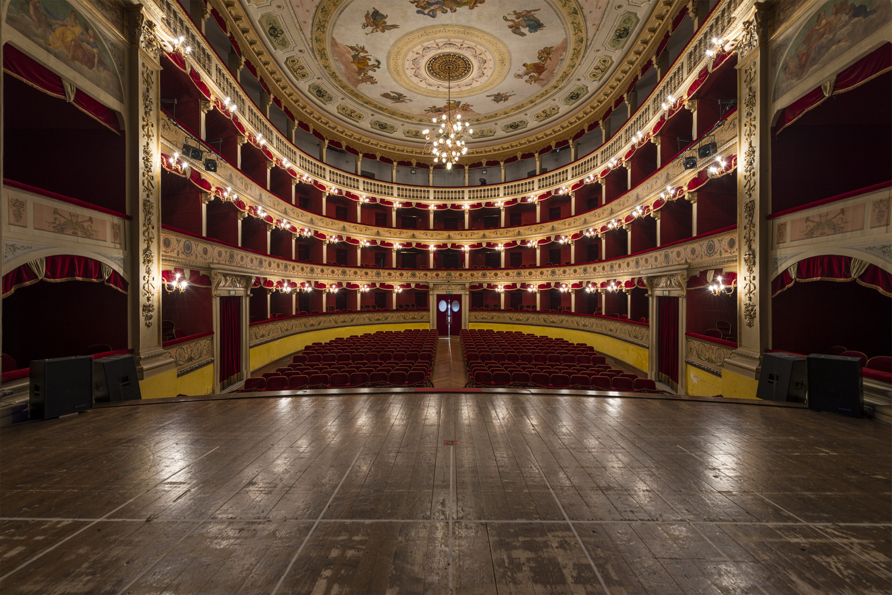
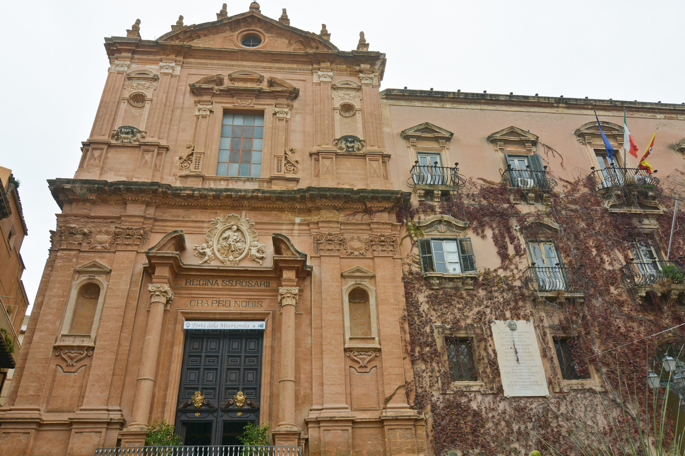

A OGNI PROVINCIA SICILIANA LA SUA PIAZZA

Piazza Pirandello, situata nel cuore del centro storico di Agrigento.
EDIFICI PRESENTI:
Qui si trovano il mezzo busto bronzeo del premio Nobel, il Teatro civico Luigi Pirandello e il secentesco ex convento dei Domenicani oggi sede del Municipio con l'adiacente facciata barocca della chiesa di S. Domenico. Dal lato opposto della piazza c'è il convento dei Padri agostiniani.

Teatro Luigi Pirandello

chiesa di S. Domenico